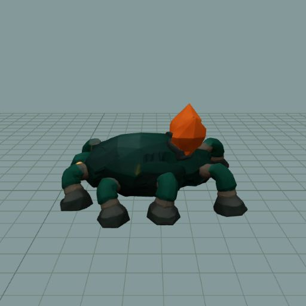
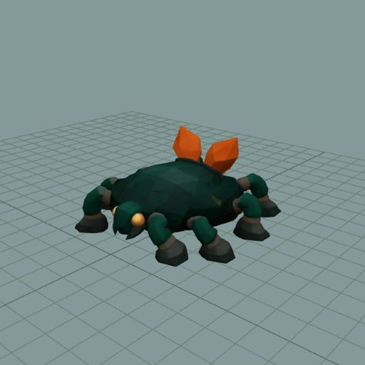

The retained TRELLIS model and fitted eight-leg rig run through the actual game creature factory, matte materials, animation controller and Rapier movement. Independent review retains the result as progress toward a Rootbound encounter.


At its authored 0.212 m/s pace, the clip runs near 1×. The generic rusher's 0.875 m/s roam pace drives it near 4.125×; faster movement needs a suitable cadence/clip decision. The flat-floor check uses a provisional generic capsule. A loaded still stands in for idle in this diagnostic. Species encounters, production balance, fitted collision and complete gameplay animation states are not admitted yet.
Both six-second scripted travel traces stay grounded. An analytical check of exported sole samples across two translated cycles finds negligible contiguous stance drift; that calculation is separate from the native movement trace. Independent instances and disposal preserve the shared model template.
Interactive native fixture · Independent review · Authored-speed trace · Faster trace · Analytical stance check · Walking-pose receipt · Instance lifetime
Files named native-after-fast are post-travel idle portraits, not evidence of fast walking.